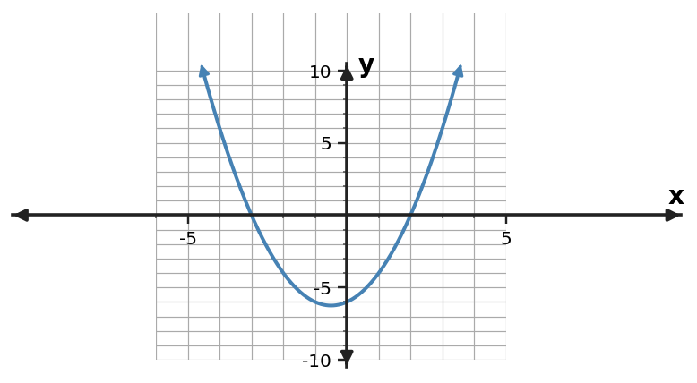

1. For $y=(x-5)^2-8$, state the vertex.
2. For $y=(x+6)^2+4$, state the vertex.
3. For $y=(x+5)(x-7)$, state the zeros.
4. For $y=2(x-4)(x+8)$, state the zeros.
5. For $y=x^2+6x-9$, state the $y$-intercept.
6. For $y=-2x^2+4x+10$, state the $y$-intercept.
7. Rewrite $y=(x+5)(x-7)$ in standard form.
8. Rewrite $y=(x+6)(x-6)$ in standard form.
9. Rewrite $y=(x-1)(x-8)$ in standard form.
10. Rewrite $y=x^{2} + 3x - 18$ in factored form.
11. Rewrite $y=x^{2} - 10x + 9$ in factored form.
12. Rewrite $y=x^{2} + 9x + 8$ in factored form.
13. Three equivalent equations describe the same quadratic. You need its roots to solve $f(x)=0$. Which form should you inspect first, and why?
14. You are sketching a quadratic and want its turning point immediately. Which form should you inspect first?
15. You want the point where a quadratic crosses the $y$-axis. Which form usually reveals that value without rewriting?
16. A student says standard form is always the best form. Give one task for which factored form is more efficient.
17. Use the graph to read the zeros. Then choose which form—standard, vertex, or factored—would preserve those zeros most visibly.

18. Use the table’s symmetry to identify the vertex, then write a vertex-form model with $a=1$.
| $x$ | $y$ |
|---|---|
| $2$ | $-3$ |
| $3$ | $-6$ |
| $4$ | $-7$ |
| $5$ | $-6$ |
| $6$ | $-3$ |
19. Show that $y=(x+5)(x-7)$ and $y=x^{2} - 2x - 35$ are equivalent by expanding the factored form.
20. For the equivalent forms $y=(x+6)(x-8)$ and its standard form, which form reveals the $x$-intercepts without further algebra?
21. For $y=(x-5)^2-10$, which visible feature would take more work to obtain: the vertex or the zeros?
22. An archway model asks for maximum clearance height. Which quadratic form is most useful first, and why?
23. A break-even model asks for the two input values where profit is zero. Which quadratic form is most useful first, and why?
24. Rewrite $y=(x+6)^2-36$ in factored form by recognizing a difference of squares.